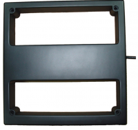
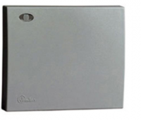
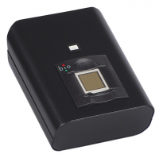
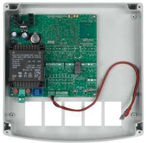
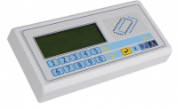
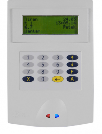
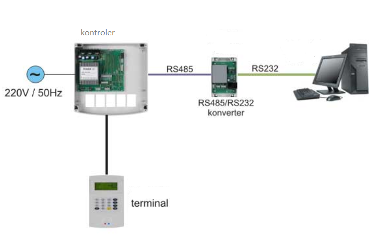

Sigurnost kontrole pristupa karticama i evidencija radnog vremena
Članovi tima:
Dario Horvat
Mislav Sraka
Općenito
U današnjem užurbanom svijetu, način na koji neko poduzeće posluje treba promatrati sa raznih aspekata, a posebice sa sigurnosnog aspekta. Događaju se razne krađe koje mogu naštetiti ili poduzeću ili određenoj osobi, te stoga treba voditi računa o identifikaciji i određenoj sigurnosti. Identifikacija predstavlja provjeru da li je neka osoba baš ta osoba za koju se izdaje, i ona je vrlo važan element pri postizanju sigurnosti. Rizik od raznih krađi treba svesti na minimum. Pa tako treba zaštititi osobna i prijenosna računala od upotrebe strane neovlaštene osobe. Također treba voditi veliku brigu prilikom plaćanja kreditnim karticama ili preko interneta ne bi li se netko dokopao našeg pina.
{kind=link}
Slika 1. Identifikacijska kartica
IZVOR slike: http://www.mup.hr/UserDocsImages/topvijesti/2013/lipanj/nova_osobna/Osobna_2003.jpg
{kind=link}
Za svaki objekt je vrlo važna sigurnost samog objekta. Sustavi kontrole pristupa čine važan temelj sigurnosti i tehničke zaštite svakog objekta te se na samo projektiranje i dizajniranje takvih sustava stavlja poseban naglasak. Ovisno o veličini objekata te samim zahtjevima korisnika koji koriste kontrolu pristupa, razvijaju se rješenja za svaku posebnu namjenu. Sustav kontrole pristupa se često pojavljuje kao samostalan koncept ili kao dio sveobuhvatnog koncepta tehničke zaštite nekog objekta. U velikom broju slučajeva, sa kontrolom pristupa se i pojavljuju i kombiniraju sustavi za evidenciju radnog vremena zaposlenika. Ti sustavi za evidenciju radnog vremena služe kao temelj za izračun plaća zaposlenika i praćenje radnih aktivnosti samih zaposlenika te se često traži usklađivanje sa određenim standardima. Sustav kontrole i registracije pristupa se primjenjuje u prostorima gdje postoji potreba za ograničenjem pristupa. Dakle, neovlaštenim osobama je nemoguće pristupiti pojedinim objektima i prostorijama. Sustav kontrole pristupa nam još omogućava i analizu ulaska i izlaska osoba u određeni prostor. Danas se najčešće koriste čitači sa beskontaktnim karticama. Za one prostorije ili objekte gdje je potrebna sigurnost na najvišoj mogućoj razini se koriste razne kombinacije čitača i tipkovnica ili biometrijskih čitača. Nakon ispravne autorizacije karticom, a autorizacija predstavlja mehanizam kojim se utvrđuje koju razinu pristupa ovjereni korisnik ima, korisnik preko tipkovnice unosi pristupni pin koji je samo njemu poznat ili se autorizacija vrši nekom biometrijskom metodom. Neke biometrijske metode su otisak prsta određenog korisnika ili skeniranje rožnice oka tog korisnika.
--Mislav Sraka 18:20, 16. siječnja 2016. (CET)
Vrste i podjele kartica
{kind=link}
Slika 2. Osnovna podjela kartica sa predstavnicima
IZVOR slike: http://sigurnost.zemris.fer.hr/pk/2004_galinovic/diplomski/diplomski1546_html_m3cf5b154.gif
{kind=link}
Kada govorimo o karticama, govorit ćemo o pametnim karticama jer se one koriste kod sustava za kontrolu pristupa. Smart Card ili Pametna kartica je plastična kartica veličine obične kreditne kartice ili osobne iskaznice kakve su nam prisutne u svakodnevnom životu, s tim da u sebi ima ugrađen čip na kojem se nalaze procesor, memorija i sklopovi koji omogućavaju komunikaciju odnosno razmjenu podataka s okolinom. Čip ove kartice čini pametnima. Ova veza između prikladne plastične kartice i mikroprocesora omogućava nam da se nezamisliva količina podataka može pohraniti, dohvatiti i procesuirati. Pametne kartice mogu pohraniti nekoliko stotina puta više podataka nego obične kartice s magnetskom trakom. Informacija koja je pohranjena na čipu u kartici se prenosi pomoću ugrađenog sklopovlja do čitača kartice. [4]
Elementi od kojih se sastoji pametna kartica
Smart kartice imaju ista osnovna tri elementa kao i svi ostali računalni sustavi: procesorsku snagu, pohranu podataka i sredstva koja se bave ulazom i izlazom podataka. Procesorska snaga je obično mikroprocesorski čip (npr. Intel 8051 i Motorola 6805), a pohrana podataka izvedena je pomoću memorijskog čipa (EEPROM, ROM, RAM). U većini Smart kartica ovi resursi su kombinirani u jedan čip. Prijenos podataka varira od kartice do kartice ovisno o namjeni. Da bi kartica mogla raditi mora imati i izvor napajanja koji je obično čitač kartice ili se pak nalazi na kartici. [6]
Mikroprocesor
Mikroprocesor je inteligentni element pametne kartice koji obrađuje podatke i vrši njihovu interpretaciju. Software koji je zadužen za interpretaciju i manipulaciju podacima može biti upisan u memoriju prilikom proizvodnje kartice ili naknadno upisan pod samom kontrolom mikroprocesora. Mikroprocesori u pametnim karticama mogu biti 16-bitni i 32-bitni i raditi na taktu od 0-50 MHz. [6]
Memorija
Memorija u pametnim karticama može biti rijetko promjenjiva, zadržavajući podatke nakon nestanka napajanja, ili promjenjiva kod koje podaci nestaju nakon nestanka napajanja. U tom slučaju Smart kartica bi zahtijevala bateriju za napajanje. Memorija isto tako može biti takva da dozvoljava čitanje iz nje i pisanje u nju (RAM) ili pak samo čitanje iz nje (ROM). U većini slučajeva aplikacije pametne kartice zahtijevati će ne promjenjivu memoriju za pohranjivanje podataka tipa identiteta vlasnika kartice i aplikacijskog softvera i promjenjivu memoriju za ažuriranje pohranjenih podataka kao što je npr. stanje bankovnog računa nakon neke transakcije. Memorije u pametnim karticama se stoga mogu kategorizirati u tri skupine: ROM, RAM i programabilni ROM (PROM).
ROM memorija je nepromijenjiva i njen sadržaj je u nju upisan prilikom proizvodnje. Jednom upisan, sadržaj se više ne može mijenjati. U pametnim karticama prisutne su memorije od otprilike 32 kB.
RAM memorije su promijenjive i služe samo za privremeno pohranjivanje podataka jer se, kako smo već naveli, podaci nakon nestanka napajanja iz nje brišu. Podaci se u RAM mogu upisivati, čitati, mijenjati i brisati. U pametnim karticama je raspoloživo 64 kB RAM memorije.
Postoje dvije vrste programabilnih ROM memorija (PROM): električki programabilne ROM (EPROM) i električki izbrisive programabilne ROM (EEPROM) memorije.
Za razliku od EPROM-a, EEPROM se može reprogramirati, ali mu je zato struktura mnogo složenija, što ga čini mnogo skupljim. Raspoloživo je oko 8 kB EEPROM memorije. Memorija može biti struktuirana tako da omogućava različite nivoe zone sigurnosti. Otvorena zona sigurnosti sadrži podatke koji nisu povjerljivi npr. identitet vlasnika. Tajna zona memorije sadrži povjerljive podatke kao što je PIN te je nedostupna svima osim procesoru koji provjerava taj broj sa brojem koji unosi korisnik. Na taj način povjerljivi podaci nikada ne izlaze iz kartice. [6]
Ulaz/izlaz
Postoji više načina da se podaci prenesu u karticu ili da se iz nje pročitaju. Kontaktne kartice obično sadrže metalne kontakte na površini kartice, koji, kad su ubačeni u čitač, povezuju unutrašnjost kartice sa vanjskim svijetom. Beskontaktne kartice koriste neku od bežičnih tehnologija prijenosa podataka, što uvjetuje to da se kartica mora nalaziti u blizini uređaja koji vrši upis/ispis podataka. Super pametne kartice imaju integriranu tipkovnicu i mali ekran i prema tome im nije potreban neki uređaj za prijenos podataka, već se podaci mogu unijeti od strane korisnika. Ovakve vrsta kartica ima ipak kontakte koji joj omogućuju da komunicira s drugim uređajima takvoga tipa.[6]
Izvori napajanja
Općenito postoje tri metode napajanja Smart kartica. To su:
Iz vanjskog izvora napajanja preko kontakata
U ovoj metodi energija je poslana kartici preko dva kontakta koja se nalaze na površini kada se kartica ubaci u uređaj koji zatim vrši pisanje/čitanje podataka. Nakon ubacivanja u uređaj kartica će se sama resetirati i početi izvršavati program u memoriji, koji će početi komunicirati.
Iz vanjskog izvora napajanja prijenosom energije U ovoj metodi, bežičnim putem, kao npr. induktivnom vezom, će se prenjeti energija koja će biti dovoljna da pobudi u kartici nekakav proces koji će izvršiti neku kratku operaciju i zatim se ugasiti. Da bi ovo bilo moguće kartica se mora nalaziti u neposrednoj blizini tog uređaja kako bi prijenos energije bio učinkovit.
Iz baterije koja je ugrađena u karticu U ovoj trećoj metodi, baterija je sastavni dio kartice, i kartica se iz nje napaja. Ova metoda nije popularna zbog teškoća koje nastaju u zadovoljavanju ISO standarda, a odnose se na dimenzije, težine, i troškova koji rastu s ugrađivanjem baterije u karticu.[6]
Podjela kartica ovisno o čipu
Ovisno o čipu razlikujemo:
-MEMORIJSKE KARTICE
-kartice s običnom memorijom
-kartice s zaštićenom ili dijeljenom memorijom
-kartice s pohranjenom vrijednošću
-MIKROPROCESORSKE KARTICE
Memorijske kartice su one kod kojih je u čip ugrađena samo memorija. Takve memorijske kartice mogu pohraniti i do tisuću puta više podataka od običnih kartica s magnetskom trakom. S obzirom na vrstu memorije razlikujemo tri tipa memorijskih kartica: kartice s običnom memorijom koje su obično namjenjene samo za pohranjivanje podataka, kartice s zaštićenom ili dijeljenom memorijom koje sadrže jednostavne logičke veze s kojima nadziru pristup podacima i kartice s pohranjenom vrijednošću kao npr. telefonske kartice. Zbog sigurnosnih razloga primjena ovakvih kartica ograničena je na one aplikacije kod kojih sigurnost podataka ne igra veliku ulogu. Mikroprocesorske kartice su kartice koje osim memorije na čipu imaju ugrađen mikroprocesor, pa prema tome mogu obavljati različite funkcije kao što su npr. enkripcija podataka, napredna sigurnost podataka (informacije), lokalna obrada podataka, kompleksne operacije nad podacima. Zbog svoje velike sigurnosti većina kartica koje sadržavaju povjerljive podatke, su tipa mikroprocesorskih pametnih kartica. Pametne kartice mogu biti i identifikacijske kartice koje koriste da bi se dokazao identitet vlasnika kartice. Nadalje pametna kartica može služiti kao kreditna ili debitna kartica, te se pritom mogu obavljati transakcije. Sve ove primjene zahtjevaju sigurnu pohranu podataka kao što su biometrični podaci, povijesti bolesti pacijenta, tajni broj kreditne kartice te razni ključevi za kriptiranu autentičnost. [6]
Podjela kartica ovisno o načinu pristupa
Ovisno o načinu pristupa razlikujemo:
-KONTAKTNE KARTICE
-BESKONTAKTNE KARTICE
Kontaktne pametne kartice imaju svu mikroelektroniku ugrađenu u unutrašnjost kartice u obliku jednog čipa, veličine oko 10 mm, kojem su zlatni kontakti izvedeni na površinu kartice. Kontakti omogućuju komunikaciju i prenose energiju do mikroelektronike u čipu. Kontakata ukupno ima 8: Dva su rezervirana za napajanje (VCC, Ground), jedan za signal takta odnosno signal vremenskog vođenja (Clock), jedan za sami reset mikroprocesora (Reset), dva se koriste za komunikaciju između pametne kartice i vanjskog sustava i obratno (I/O, VPP), a dva su unaprijed rezervirana i ne koriste se. Mnoge kartice imaju još i magnetsku traku na poleđini radi kompatibilnosti s postojećom opremom. Znači integrirani krug treba napajanje, signal takta koji upravlja procesorom i vezu s koje će primiti odnosno na koju će slati podatke. Kod ove vrste kartica ovo se postiže preko kontakata. [2,4]
{kind=link}
Slika 3. Kontaktna kartica
IZVOR slike: https://encrypted-tbn2.gstatic.com/images?q=tbn:ANd9GcRFtl5cgVt89PzlxYStluqWrwpUMB0gKgx5iKRw8KGeaU7hdJeT
{kind=link}
Slika 4. Raspored 8-pinskog kontakta pametnih kartica
IZVOR slike: http://os2.zemris.fer.hr/pk/2004_galinovic/Seminar_html_m2ae518c.gif
{kind=link}
Beskontaktne pametne kartice nemaju fizički kontakt sa čitačem nego imaju u sebi ugrađenu antenu pomoću koje bežično komuniciraju s čitačem kartica putem radio signalom (RFID). Beskontaktne kartice našle su svoju primjenu na području identifikacije i autentikacije, kontrole pristupa, evidencije radnog vremena, elektroničkog novčanika, plaćanja ulaznica, karata u javnom transportu i slično. Ovisno o napajanju postoje pasivne kartice koje nemaju u sebi bateriju nego se napajaju iz čitača preko radio signala te aktivne kartice koje imaju bateriju čime su nešto skuplje i fizički veće od pasivnih, no time imaju veće domete komunikacije. Dometi čitanja karice idu od par centimetara (RFID kartice) do nekoliko metara (aktivne UHF kartice). [1]
{kind=link}
Slika 5. Beskontaktna kartica
IZVOR slike: http://web.zpr.fer.hr/ergonomija/2005/antoncic/slike/bezkontaktna.gif
{kind=link}
Mane beskontaktnih pametnih kartica
Bezkontaktne kartice mogu biti relativno spore i skupe za izradu i mogu prestati s radom prilikom savijanja jer za razliku od kontaktnih kartica nisu napravljene od jednog čipa već od većeg broja povezanih komponenti. Sa strane sigurnosti bezkontaktne kartice su manje sigurne zbog mogućnosti da uvijek može postojati još neko tko sluša sve što mi šaljemo te to može zlouporabiti. [6]
Prednosti beskontaktnih pametnih kartica
- Pouzdanost i dulji životni vijek: Površinski kontakti su najčešći kvarovi koji se događaju u elektroničkim sustavima ovoga tipa. Površinski kontakti su stoga podložni oštećenju i onečišćenju što gotovo sigurno uvjetuje kvar sustava.
- Orijentacija: Bezkontaktna kartica može biti u bilo kojoj orijentaciji u odnosu na čitač, za razliku od kontaktne koja se mora gurnuti u za to predviđen utor, i imati pritom određenu orijentaciju.
- Prikladnost: Jedinica koja čita/piše na karticu može biti ugrađena u bilo kakvo nemetalno kučište, što omogućuje bolju mehaničku zaštitu takve jedinice
- Minimalno održavanje: Ne postoje nikakvi pokretljivi mehanički dijelovi što uvjetuje minimalno održavanje takvih sustava.
- Robusnost: Čitači i bezkontaktne kartice mogu podnijeti gotovo bilo kakve uvjete okoline kao i vremenske uvijete. Zbog toga su prikladne za industrijsku ili neku sličnu okolinu gdje mogu doći u doticaj s uljem, masnoćom ili prašinom. [6]
--Mislav Sraka 18:22, 16. siječnja 2016. (CET)
ISO standardi koji propisuju svojstva pametnih kartica
ISO-7816 je međunarodni standard za pametne kartice. ISO-7816 standard sastoji se od šest dijelova:
1. ISO-7816-1
2. ISO-7816-2
3. ISO-7816-3
4. ISO-7816-4
5. ISO-7816-5
6. ISO-7816-6
ISO-7816-1 standard
Ovaj dio ISO-7816 standarda opisuje fizičke karakteristike pametnih kartica njezine dimenzije, te otpornost kartice na vanjske smetnje. Dimenzije kartice po ovom standardu iznose 85.60mm × 53.98mm × 0.80mm. Za karticu su također propisane granice izlaganja koje kartica mora izdržati u različitim elektromagnetskim fenomenima kao što su rengenske zrake, UV svjetlo, elektromagnetska polja, elektrostatička polja te temperatura ambijenta u kojem se nalazi kartica tako da ona i nakon izlaganja tim uvjetima i dalje normalno funkcionira. Također ovaj standard određuje karakteristike kartice kada se ona savija ili rasteže, ovo osigurava da je kartica proizvedena tako da se garantira besprijekorno funkcioniranje kartice i da ona obavlja svoju funkciju u očekivanom životnom ciklusu kartice. [7]
ISO-7816-2 standard
ISO-7816-2 standard određuje dimenzije i lokaciju kontakata na kartici te funkciju i poziciju određenog kontakta. Kontaktna pločica na površini pametne kartice koja je spojena za izvodima integriranog kruga (mikročipa) umetnutog u pametnu karticu ima osam kontakata koji su označeni od C1 do C8. Međutim nije svih osam kontakata povezano sa integriranim krugom i u današnje vrijeme dva kontakta još nemaju svoju specijalnu funkciju već su ti kontakti rezerviarni za buduću upotrebu. Slika 4. prikazuje tih osam kontakata, a prije u tekstu su opisani kontakti i njihova namjena.[7]
ISO-7816-3 standard
Ovaj dio standarda opisuje električne signale i protokole prenošenja signala kod pametnih kartica. Većina ovog standarda važna je za proizvođače CAD uređaja i za programere koji žele uspostaviti komunikaciju s pametnom karticom na vrlo niskom nivou, signalnom nivou. Ovim standardom deklariraju se razine napona, jačine struja te perioda trajanja signala, također se definiraju protokoli (T=0, T=1) komuniciranja između CAD uređaja i kartice. [7]
ISO-7816-4 standard
Ovaj standard određuje cijelu logičku strukturu pametne kartice te naredbe i protokole za komuniciranje, a specificira:
- sadržaj poruka, naredbi i odgovora, odaslanih od CAD uređaja prema kartici i obrnuto
- strukturu i sadržaj bajtova koje šalje pametna kartica kao odgovor na reset
- strukturu datoteka i podataka
- metode pristupa datotekama i podacima na kartici
- metode za sigurno komuniciranje
- metode pristupa algoritmima koji su procesuirani na kartici. Ovaj standard ne opisuje te algoritme [7]
ISO-7816-5 standard
Ovaj dio standarda opisuje brojevni sustav za prikaz identifikatora aplikacija AID-a (eng. Application Identifiers). Svaki AID ima dva dijela. Prvi dio je identifikator registriranog aplikacijskog pružatelja RID (eng. Registered Application Provider Identifier) koji se sastoji od 5 bajta i oni su jedinstveni. Drugi dio AID je varijabilne duljine do 11 bajtova koji omogućuje RID-u identifikaciju specifične aplikacije. [7]
ISO-7816-6 standard
Opisuje međuindustrijske podatkovne elemente, fizički transport uređaja i prijenos podataka, odgovor na reset ATR (eng. Answer To Reset). Ova specifikacija dozvoljava dva protokola T=0 i T=1. Kartica može podržavati bilo koji, ali ne oba. [7]
EMV standard
EMV sandard također je jedan od važnijih standarda za pametne kartice kojeg su formirale vodeće financijske tvrtke u kartičnom poslovanju Europay, Mastercard i Visa. Ovaj standard pokriva elektromehaničke karakteristike, protokole, podatke te instrukcije koje spaja sa bankovnim transakcijama. Cilj EMV specifikacije je da svi sustavi za plaćanje dijele iste POS-terminale (eng. Point of Sales), kao što to čine magnetne kartice i aplikacije za njih. Fleksibilnošću EMV standarda, bankama je dopušteno da dodaju svoje opcije i specijalne potrebe u platni sustav pametnih kartica. [7]
GSM standard
GSM(eng. Global Standard for Mobile Communications) standard je jedan od najvažnijih stndarda za pametne kartice u digitalnim mobilnim komunikacijama. GSM specifikacija podijeljena je u dva dijela, prvi dio opisuje osnovne funkcionalne karakteristike dok drugi dio opisuje sučelje te logičku strukturu kartice. Originalno, ova specifikacija je bila prvenstveno napravljena za mobilnu telefonsku mrežu. Kada se pametna kartica počela koristiti u mobilnim telefonima kao modul identifikacije pretplatnika, dio GSM standarda postao je standard pametnih kartica. Sa GSM mrežom, sve GSM tvrtke izdaju SIM kartice svojim pretplatnicima. Svaka SIM kartica ima funkciju da identificira pretplatnika u mreži. SIM kartica može biti standardnih dimenzija ili manjih dimenzija. Zbog toga što se ova kartica koristi za držanje funkcija GSM mreže koriste se mikrokontroleri boljih performansi, mikroprocesor je najmanje 16-bitni dok je EEPROM memorija namijenjena spremanju aplikacija te parametara mreže i pretplatnikovih podataka. [7]
--Mislav Sraka 18:22, 16. siječnja 2016. (CET)
RFID tehnologija
Za kontrolu pristupa putem kartica se najčešće koriste beskontaktne pametne kartice koje koriste RFID tehnologiju. RFID je skraćenica iz engleskog Radio Frequency Identification. To je naziv za tehnologije koje koriste radio valove kako bi automatski identificirali objekte. Radiofrekvencijska komunikacija temelji se na stvaranju elektromagnetskih valova u odašiljačima i njihovom otkrivanju na udaljenom prijamniku. Postoji nekoliko metoda identifikacije objekata, no najčešća je pohranjivanje identifikacijskog serijskog broja ili neke druge informacije na mikroprocesor koji zajedno s antenom čini RFID transponder. Transponder komunicira s čitačem putem radio signala, jednosmjerno ili dvosmjerno, a čitač je povezan s računalom ili računalnom mrežom na kojemu se nalazi baza podataka. Jednostavna identifikacijska oznaka pohranjena na transponderu u ovoj bazi povezana je s informacijama o označenom proizvodu. Velika raznolikost RFID sustava omogućuje izrazito velik broj primjena, koji s vremenom i tehnološkim napretkom sve brže raste. Ugrađivanje RFID transpondera u doslovno sve što okružuje ljude, od donjeg rublja, preko automobila i vlakova do kućnih ljubimaca pa i u same ljude, obećava brojne pogodnosti i nove, do sada neslućene, mogućnosti lagodnijeg i efikasnijeg obavljanja svih svakodnevnih poslova. Fleksibilnost i sveprisutnost RFID sustava ne omogućuju samo velik broj primjena već otvaraju vrata i brojnim mogućnostima zlouporabe. [5]
Primjene RFID tehnologije
RFID tehnologija idealna je za primjene kod kojih je potrebna sigurna i jedinstvena identifikacija te dugotrajnost i izuzetna otpornost identifikatora na razne specifične utjecaje okoline, a bez izravne vidljivosti. U većini okruženja RFID sustavi postižu točnost prvog očitanja od 99.5% do 100%. Trenutno se ova tehnologija najviše susreće u transportu i logistici, proizvodnji i kontroli pristupa. Koristi se za označavanje životinja u uzgoju, praćenje proizvoda u opskrbnom lancu, praćenje poštanskih pošiljaka i prtljage u zračnom prometu, naplatu cestarina i parkirališta, kontrolu pristupa vozilima, zatim nadzor artikala u trgovinama te zaštitu od krađe. Kontrola ulaza i radnog vremena je još jedna tipična primjena ove tehnologije. Kako sve karakteristike RFID sustava u velikoj mjeri ovise o frekvencijama na kojima rade, tako se i njihove primjene mogu grupirati prema istom kriteriju:
1. RFID sustavi koji rade na niskim frekvencijama koriste se za:
• sigurnosni nadzor
• identifikaciju životinja i
• praćenje imovine
2. Sustavi koji koriste visoke frekvencije primjenu nalaze u:
• pametnim karticama
• kontroli pristupa
3. UHF RFID sustavi koriste se kod:
• željeznica
• identifikacije vozila
• transporta robe [5]
Jedna zanimljiva primjena RFID tehnologije je u zatvorima za označavanje zatvorenika kako bi se spriječili bijegovi. Ovakvo označavanje dovelo je i do značajnog smanjenja količine nasilja zbog svijesti zatvorenika o stalnom nadgledanju. Američka vojska kao veliki zagovornik RFID tehnologije planira zamijeniti identifikacijske pločice vojnika RFID transponderima, a bolnice već eksperimentiraju s RFID narukvicama pomoću kojih medicinsko osoblje dobiva informacije o pacijentima. Razmatra se mogućnost korištenja RFID-a kako bi se spriječilo neovlašteno korištenje oružja. Postoje i planovi korištenja RFID narukvice na koncertima umjesto propusnica. [5]
--Mislav Sraka 18:23, 16. siječnja 2016. (CET)
Sigurnosni aspekti korištenja pristupnih kartica
Sigurnost možemo navesti kao je jedno od najvažnijih obilježja pametnih kartica. Sigurnosti se pridaje golem značaj, posebno kod financijskih aplikacija, i kada je u pitanju privatnost podataka korisnika kartice. Za razliku od kartica sa magnetnom trakom koje predstavljaju pasivni sustava, pametna je kartica kao primjer aktivnog sustava, sa svojom ugrađenom inteligencijom, sposobna pretrpjeti razne napade od strane neautoriziranih osoba kojima je namjera prijevara ili čitanja povjerljivih korisničkih podataka koji su spremljeni na samoj kartici. Za nikakve kartice ne možemo reći da su 100% sigurne, pa tako ni za pametne kartice. Svaki se sistem može ugroziti, ali je potrebno uložiti dovoljnu količinu resursa ne bi li se to ostvarilo. Hoće li se sam sistem moći ugroziti ovisi o tome isplati li se to učiniti, tj. je li razina sigurnosti veća od razine truda i resursa koje bi trebalo uložiti ne bi li se sama sigurnost ugrozila. Istraživanja i činjenice pokazuju da pametne kartice pružaju više sigurnosti nego obične kartice s magnetskom trakom ili bilo koji široko upotrebljiv sustav današnjice. Gotovo svi napadi na pametne kartice u zadnje vrijeme klasificirani su kao napadi 3. stupnja. Napade 3. stupnja karakterizira to da je potrebno uložiti milijune dolara, ne bi li se ugrozila sigurnost npr. jedne transakcije. [6]
Identifikacija
Identifikacija korisnika je važna jer sustav mora pouzdano znati tko je korisnik, a isto tako korisnik mora biti siguran da se nitko drugi umjesto njega ne može prijaviti u sustav sa njegovim imenom. Identifikacija pojedinca je jedan od najkompleksnijih zadataka u području informacijske tehnologije. Identifikacija zahtijeva od pojedinca da identificira samog sebe, a od računalnog sustava zahtijeva da prepozna da je novopridošla poruka identifikacije generirana od korisnika koji ima pristup sustavu. Sistem nakon identifikacije preuzima svu odgovornost za sve akcije koje identificirani korisnik napravi za koje ima autorizacijske dozvole. [7]
Kontrola pristupa
Najopćenitiji uređaji koji se koristi za kontrolu pristupa privatnim područjima, gdje se rade osjetljivi poslovi ili gdje su spremljeni podaci, su ključevi i magnetske kartice. Oni imaju svoje nedostatke te se mogu jednostavno kopirati ili kad su ukradeni mogu dozvoliti pristup neautoriziranim osobama. Pametne kartice rješavaju ovaj problem jer je njih teško kopirati i u mogućnosti su spremiti digitalizirane karakteristike osobe(biometrija). Sa odgovarajućom verifikacijskom opremom ovi podaci mogu biti korišteni kod točke ulaza da provjere identitet one osobe koja ima karticu. Kartica može također biti individualno personalizirana tako da se određenoj osobi dozvoli pristup određenim zaštićenim prostorijama za koje vlasnik kartice ima odobrenje. [7]
Korištenje kriptografije
U pametne kartice, kao programska potpora se ugrađuje operacijski sustav i neki od algoritama za kriptiranje. Razlika između klasičnog operacijskog sustava i operacijskog sustava instaliranog u pametne kartice je ne postojanje nikakvog sučelja za komunikaciju između operacijskog sustava i čovjeka. Njegova namjena je da osigura siguran i pouzdan pristup datotečnom sustavu kartice i osigura sve što je potrebno za izvršavanje nekog od kripto algoritama. Općenito gledano kripto sustavi se dijele na simetrične i asimetrične kripto sustave. Simetrični kripto sustavi koriste samo jedan ključ na obje strane kanala komunikacije. Takav ključ se naziva tajni ključ. Danas najpoznatiji simetrični kripto sustavi su DES s duljinom ključa od 56 bita, 3-DES ključ 112-bitni te AES 128-256 bitni ključ. Preporuča se korištenje AES algoritama jer je DES algoritam probijen i nesiguran. Prednost simetričnih kripto sustava u odnosu na asimetrične je brzina. Pogodni su kad je potrebno kriptirati velike količine podataka ili kad je od presudne važnosti brzina. Za razliku od simetričnih, asimetrični kripto sustavi imaju dva ključa. Na svakoj strani komunikacijskog kanala se nalazi po jedan ključ. Ključevi asimetričnog kripto sustava se nazivaju javni i privatni ključ, čemu se jedan ključ koristi za enkripciju, a komplementaran ključ iz para se koristi za dekripciju. Najpoznatiji asimetrični algoritam je RSA (po autorima: Rivest, Shamir, Adelman). Ključevi kod RSA kripto sustava su 1024 – 4096 bitni. [3]
Digitalni potpis
Kriptografija nam omogućuje i digitalni potpis dokumenta. Za digitalni potpis se najprije generira hash sažetak dokumenta. Hash sažetak je kratak niz koji jednoznačno definira dokument iz kojeg je nastao. Naime, nemoguće je iz poznatog hash sažetka generirati izvorni dokument i nemoguće je kreirati dva različita dokumenta koji bi imali isti hash sažetak. Hash sažetak se još naziva i digitalni otisak poruke jer primatelj može usporediti hash sažetak koji je primio zajedno s porukom i hash sažetak koji je sam generirao iz primljenog dokumenta, te zaključiti da li je dokument izvoran, tj. da li je promijenjem negdje duž komunikacijskog kanala. Digitalni potpis dokumenta je njegov hash sažetak enkriptiran tajnim ključem pošiljatelja. Primatelj poruke može primljeni potpis dekriptirati javnim ključem pošiljatelja koji mu je dostupan te dobiveni sažetak usporediti s hash sažetkom koji je generirao iz primljenog dokumenta. Ako su sažeci jednaki onda je sigurno da ga je poslao deklarirani pošiljatelj i dokument sigurno nije u međuvremenu promijenjen. [6]
Danas je u upotrebi velik broj različitih sustava pristupnih kartica i čitača. Ukoliko gledamo sa sigurnosnog stajališta, najslabija karika u lancu kontrole pristupa jest upravo sama kartica. Ukradena ili izgubljena kartica predstavlja ozbiljnu prijetnju sigurnosti, ukoliko kontrolni uređaj dopušta prolaz samo korištenjem beskontaktne kartice bez unošenja pina ili bilo kakve biometrijske kontrole. Tako je pristup nekom objektu omogućen neovisno o osobi koja tu karticu posjeduje. Moguće su razne povrede sigurnosti ako se gubitak kartice ne ustanovi na vrijeme i ako se ukradena kartica na vrijeme ne obriše sa servera te se ne ukinu prava koja spomenuta kartica posjeduje. Također, na lokacijama gdje je pristupna kartica jedina metoda kontrole pristupa, ne može se kontrolirati točan broj osoba koje su prošle u zaštićeno područje nakon što je kartici odobren pristup.
--Mislav Sraka 18:23, 16. siječnja 2016. (CET)
Elementi sustava kontrole pristupa
Da bi kontrola pristupa djelovala na zamišljen način, tj. da bi u poslovne objekte ili u njihove dijelove pristupali samo ovlašteni ljudi moramo imati sustav da bi to djelovalo na odgovarajući način. Dijelovi tog sustava bi bili sljedeći:
- identifikacijski element
- kontroler
- čitač i tipkovnica
- računalni program za upravljanje
- komunikacijski pretvarač
- elektromehanički elementi za prostor koji se kontrolira(rampa, elektromehanička brava ili slični elementi). [8]
Identifikacijski elementi pomoću kojih se može pristupiti kontroliranom prostoru mogu biti ID kartice, otisak prsta, prepoznavanje glasa, geometrija dlana i slično koje ovisi o tome kakvu vrstu čitača imamo. [8]
Čitač
Postoji više vrsta tehnologija čitača. Najčešće su u primjeni beskontaktni čitači. Glavna uloga čitača je ta da prosljeđuju informaciju sa identifikacijskog elementa do kontrolera. Beskontaktni čitači djeluju tako da čitač emitira visokofrekventnu energiju koja će u kartici inducirati energiju potrebnu da bi se kod koji je zapisan u mikročipu poslao tom čitaču. Zatim će čitač taj kod po posebnom protokolu proslijediti do kontrolera. Da bi ovo djelovalo kartice se moraju primaknuti na određenu duljinu kako bi se prenijela energija za očitanje koda, npr. primaknuti karticu na duljinu približnu 10 cm, pa se opisani rad odnosi na pasivne kartice. Kod kontrole pristupa za vozila koriste se veći čitači ili aktivne kartice sa baterijskim napajanjem. Kontaktne čitače gdje se koriste kartice s magnetskim zapisom i kontaktne čip kartice nije preporučljivo ugraditi u sustav kontrole pristupa iz tog razloga jer kartice zbog svojih oštećenja mogu imati ograničen vijek trajanja, u odnosu na beskontaktne kartice koje su praktički neograničenog vijeka trajanja. Zajedno sa čitačem može doći i tipkovnica koja može poslužiti kod kontrole pristupa manje rizičnih prostora, gdje se ulazi sa utipkavanjem šifre, ili tipkovnica može poslužiti kao dodatna zaštita kod ulaska u kontrolirani prostor tako da se zajedno sa karticom mora utipkati odgovarajuća šifra. Kod prostora sa visokim rizikom neovlaštenog pristupa koriste se čitači gdje se koristi biometrijska identifikacija, tj. čitač koristi otiske prstiju, goemetriju dlana, šarenicu ili mrežnicu oka, geometriju lica ili prepoznavanje glasa za pristup kontroliranom prostoru. [2] U nastavku će biti biti prikazani neki od čitača kartica.
Na slici su prikazani čitači beskontaktnih kartica, gdje udaljenost kartice od čitača iznosi 10 cm ili manje.
 
{kind=link}
{kind=link}
Slika 6. Čitači kartica
IZVOR slike: http://www.proakustik.hr/proizvod-436/JAN-R1W-N-26.php
Kod očitanja otiska prsti koristi se čitač kao na slici ispod .

{kind=link}
Slika 7. Čitač otiska prsta
IZVOR slike: http://jantar.com.hr/proizvodi/citaci
Kontroler
Glavni element sustava je kontroler, na koji su povezani čitači kartica, tipke za izlaz i kontakti za nadzor vrata. Glavna funkcija kontrolera je ta da kontrolira događaje na prepreki na koju je spojen (npr. na vrata). U kontroleru su pohranjeni programi za funkcioniranje npr. kontroliranih vrata, korisnici sa svojim ovlastima te svi događaji na tim vratima. Zbog toga kontroler može raditi i bez spajanja na računalo, a ovisno o memoriji koju ima tolika je količina pohranjenih događaja. Kontroleri najčešće upravljaju s dva čitača, i to tako da mogu upravljati s jednim vratima s obostranom kontrolom ili s dvoje vrata s jednostranom kontrolom i npr. slobodnim izlazom. Duljina kablova čitača i međusobna udaljenost vratiju mogu utjecati na odabir kontrolera za upravljanje više čitača jer su duljine ograničene. Osim ulaza za čitač, kontroler mora imati ulaze i za magnetski kontakt, za tipku za izlaz i za bravu. Ponekad se kontroler i čitač pojavljuju u istom kučištu kao jedan element. [9]
Na slici je prikazan jedan kontroler sa mogućnošću prihvata na maksimalno 4 čitača. [10]

{kind=link}
Slika 8. Kontroler
IZVOR slike: http://jantar.com.hr/kontroleri
Računalni program za upravljanje
Program za upravljanje namijenjen je u prvom slučaju za programiranje sustava prilikom instalacije, dok su mu zadaće da prati korisnike i mijenja njihove podatke ovisno o potrebi, te da izrađuje izvještaje o korištenju sustava. [9]
Komunikacijski pretvarač
Kontroler sa računalom može komunicirati serijski ili mrežno, pa se koristi RS232/RS485 konverter ili TCP/IP komunikacija , jer računala imaju mrežnu karticu , a kontroleri se spajaju pomoću ugrađenog IP konvertora ili se koristi IP konvertor za cijelu seriju kontrolera.
Kontroleri su obično povezani sa RS485 komunikacijom, dok ih na računalo spajamo sa RS232 vezom. [9]
Elektromehanički elementi za prostor koji se kontrolira(elektromehanička brava ili slični elementi)
Da bi kontroler mogao kontrolirati otvaranje vrata, na vratima mora biti ugrađen neki elektromehanički element. Najčešće su to elektroprihvatnici, elektromagnetski držači ili elektomehaničke/elektromagnetske brave.
[11]
--Dhorvat2 00:28, 16. siječnja 2016. (CET)
Evidencija radnog vremena
Jedan od integracijskih elemenata kontrole pristupa može biti i vođenje evidencije radnog vremena. Postoje terminali na kojima zaposlenik prilikom dolaska na posao se prijavljuju pomoću terminala, a sustav vodi brigu o vremenu prijave te se taj podatak ujedno može koristiti kod obračuna plaća. Sustav evidencije radnog vremena više je administrativnog tipa, nego zaštitnog. Sustav je zanimljivo rješenje kod tvrtki sa većim brojem zaposlenika, a ističe se kod tvrtki koje imaju smjenski rad. Terminali se obično postavljaju kod ulaza u poslovnu zgradu, ili kod recepcije gdje se zaposlenik prijavljuje kad dođe na posao, a ujedno terminali posjeduju i funkcije kojima zaposlenik može iskazati razlog izlaska s radnog mjeste ako je to potrebno(doktor, privatni problemi, poslovni sastanak, pauza i slično). Na terminalima postoji i mogućnost očitanja ukupne satnice za trenutni mjesec. Ti terminali su povezani s računalom gdje je obično program koji vodi brigu o zaposlenima. [9]
Prednost korištenja ovakvog sustava najviše se iskazuje u obračunavanju satnice, smanjenju troškova vođenjem ručne evidencije, te u kontroli odsutnosti zaposlenika . Programsko rješenje omogućuje nam planiranje radnih sati, tj. možemo definirati bilo koje radno vrijeme. Moduli obično sadržavaju elemente koji iskazuju radno vrijeme i definirane smjene, isto tako moguće je vidjeti za svakog zaposlenika evidenciju koja pokazuje radne sate i vremena prijavljivanja i slično, a moguće je za svakog zaposlenika planiranje slobodnih dana, službenih putovanja i sl. [9]
Na slici su prikazani primjeri terminala za prijavu zaposlenika kod dolaska/odlaska u poslovni prostor.
 
{kind=link}
{kind=link}
Slika 9. Terminali za prijavu
IZVOR slike: http://jantar.com.hr/kontroleri
Isto kao i kod kontrole pristupa za sustav su nam potrebni elemeni kao što su:
- terminal
- kontroler,
- komunikacijski pretvarač,
- računalni program.
Na slici je prikazan sustav prijave za evidenciju radnog vremena koji se sastoji od terminala koji je spojen na kontroler koji je preko komunikacijskog pretvarača povezan sa računalnim programom.

{kind=link}
Slika 10. Sustav za evidenciju radnog vremena
IZVOR slike: http://jantar.com.hr/kontroleri
--Dhorvat2 15:44, 16. siječnja 2016. (CET)
Primjeri rješenja sustava kontrole pristupa
Primjer pokazuje kontrolu pristupa i terminal za evidenciju radnog vremena trgovačkog centra.
{kind=link}
Slika 11. Kontrola pristupa i evidencija radnog vremena u trgovačkom centru
IZVOR slike: http://www.tehnoservis.net/kontrola-pristupa-radnog-vremena-elektronske-brave-usluge-3.html
Elementi sustava:
- [1] terminal za prijavu radnog vremena
- [2] čitač kontrole pristupa
- [3] kontroler za kontroliranje vrata
- [4] program za evidenciju radnog vremena
- [5] elektromagnet
- [6] beskontaktna tipka za izlaz
- [7] mehanička zaokretna barijera
Kod trgovačkog centra obično imamo višesmjenski rad, pa je evidencija radnog vremena potrebna zbog kontrole dolazaka/odlazaka na posao . Kako je prikazano na slici zaposlenici se mogu prijaviti na terminalu koji je postavljen kod ulaza na stražnjim vratima. Sam terminal spojen je preko komunikacijskog pretvornika na računalo na kojem se nalazi program za evidenciju radnog vremena Pored terminala nalazi se i beskontaktna tipka za izlaz. Prostorija u kojoj se nalazi terminal za prijavu kontrolirana je kontrolom pristupa tako što se pored vrata za ulaz nalazi čitač kontrole pristupa kojim se zaposlenici prijavljuju kako bi ušli u prostoriju. Za otvaranje vrata zadužen je kontroler koji je povezan sa čitačem i postavljen je unutar prostorije. Na ulaznim vratima nalazi se elektromagnet zadužen za zadržavanje ulaznih vrata, a prije nego se uđe u samu unutrašnjost trgovine mora se proći preko mehaničke zaokretne barijere. [9]
--Dhorvat2 15:44, 16. siječnja 2016. (CET)
Zaključak
Zbog važnih dokumenata, informacija, računala koji utječu na poslovanje neke tvrtke važno je dobro zaštiti pristup tim stvarima od neovlaštenog osoblja. Kako se ne bi dogodile krađe dokumenata, informacija ili njihovo kopiranje te iskorištavanje u zabranjene slučajave potrebno je kontrolirati pristup prostorima gdje se nalaze osjetljivi podaci. Danas u primjeni imamo kontrolu pristupa gdje se karticama pristupa takvim sustavima. Postoji više vrsta kartica, a u primjeni su najviše beskotaktne kartice, dok će se u budućnosti povećavati broj sustava sa identifikacijom pomoću biometrijskih karakteristika. Da bi uopće takav sustav djelovao, on se mora sastojati od nekakvih elemenata. Najčešći elementi sustava kontrole pristupa su:
- identifikacijska isprava
- čitač
- kontroler
- komunikacijski pretvarač
- računalni program.
U primjeni su i terminali koji se koriste za prijavu zaposlenika u evidenciju radnog vremena, a najčešće se nalaze na ulazu u poslovnu zgradu. Kontrola pristupa je dobar sustav ako želimo ograničiti ulaz u neke prostore samo ovlaštenim osobama, a sigurnost mu je dosta visoka, a neka od prijetnji je krađa kartica.
--Dhorvat2 21:14, 17. siječnja 2016. (CET)
Literatura
Pri izradi projekta koristili smo ovu literaturu:
1. Kartice.hr, 2016., dostupno 15.1.2016. na http://www.kartice.hr/primjena-kartica/pristupne-access/
2. A. Galinović, Turistička pametna kartica, 2004., dostupno 15.1.2016. na http://os2.zemris.fer.hr/pk/2004_galinovic/index.html
3. T. Bošnjak, Pametne kartice i pripadni čitači, 2007., dostupno 15.1.2016. na http://fly.srk.fer.hr/~colt/paper/Ergonomija_seminar.pdf
4. A. Galinović, Sigurnosni mehanizmi Java pametne kartice, 2005., dostupno 15.1.2016. na http://sigurnost.zemris.fer.hr/pk/2004_galinovic/diplomski/index.html#Slika_2.1
5. CERT, RFID identifikacija, dostupno 15.1.2016. na http://www.cert.hr/sites/default/files/CCERT-PUBDOC-2007-01-179.pdf
6. S. Štuglin, Smart card, 2004., dostupno 15.1.2016. na http://spvp.zesoi.fer.hr/seminari/2004/smart_card-sstuglin.pdf
7. R. Đurin, Višenamjenska pametna kartica, dostupno 15.1.2016. na http://sigurnost.zemris.fer.hr/pk/2005_djurin/index.html
8. Jantar identifikacijski sustavi, Kontrola pristupa, dostupno 16.1.2016. na http://jantar.com.hr/kontrola-pristupa
9. Tehnoservis Horvat i Horvat, Kontrola pristupa i radnog vremena, elektronske brave, dostupno 16.1.2016. na Tehnoservis Horvat i Horvat, Kontrola pristupa i radnog vremena, elektronske brave, dostupno 16.1.2016. na http://www.tehnoservis.net/kontrola-pristupa-radnog-vremena-elektronske-brave-usluge-3.html
10. ProakustikSecurity, Kontrola pristupa i prolaza, dostupno 16.1.2016. na http://www.proakustik.hr/proizvod-436/JAN-R1W-N-26.php
11. I. Kurić, Kontola pristupa i biometrija, 2007., dostupno 16.1.2016. na http://www.ss-strukovna-vvlatkovica-zd.skole.hr/images/pages/Nastavni_materijali/Spahic/mikroracunala/UvodGdjeKoristitiMikrokontrolere.PDF